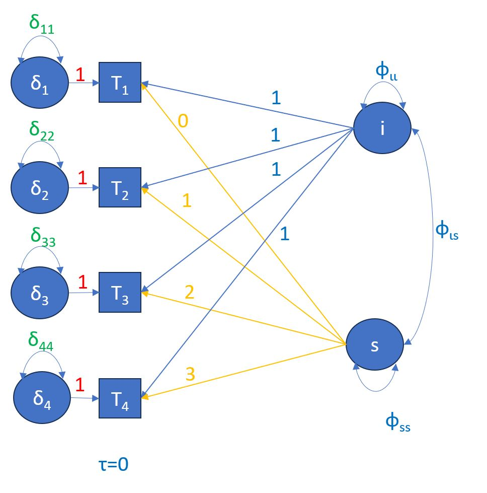
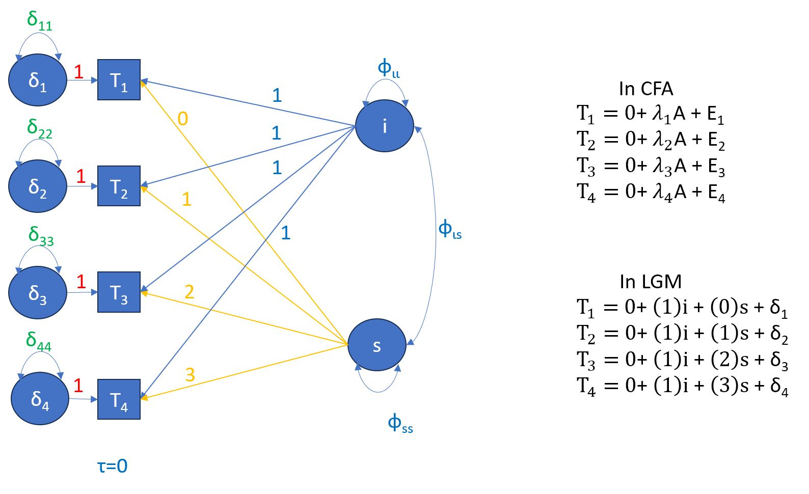
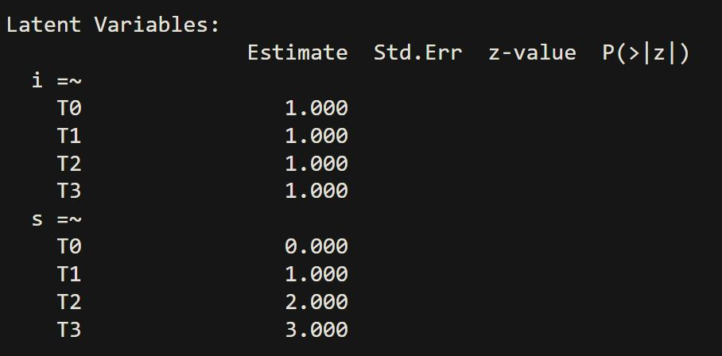
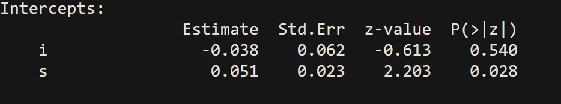
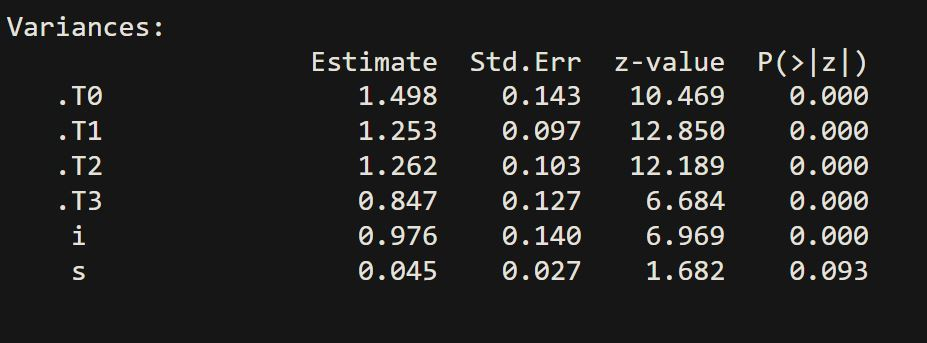

Today we will discuss Latent Growth Modeling (LGM) also known as Latent Growth Curve Analysis (LGCA), how it help us measure change over time (repeated measurements) and what advantages they have in comparison to other repeated measures analysis such as repeated measures ANOVA or hierarchical linear models.
Specifically we will cover:
Assumptions for LGM
Specifying LGM using lavaan
Interpreting output
Improving a model
Adding a covariate (predictor)
Notations in lavaan (refresher)
~predict, used for regression of observed outcome to observed predictors
=~indicator, used for latent variable to observed indicators
~~covariance
1*fixesparameter or loading to 1
NA*freesparameter or loading
~1intercept or mean (e.g., x1 ~ 1 estimates the mean of variable x1)
a*defines the parameter ‘a’,
lavaan package
Today we will also expand our lavaan usage beyond the analysis. We will also use the function simulateData to create random data for our LGM. If you like challenges try to randomly create data that will be suitable for LGM.
What is LGM?
Generally speaking, LGM is a special case of CFA where we incorporate a longitudinal element. This implies that we have a set of repeated measurements, at least three, and we want investigate change over these repeated time measurements.
LGM allows us to estimate means and covariances
LGM allows us to estimate observed and latent values
We will only focus on continuous measurements
All of our participants needs to be measured with the same time measurement information
We will also primarily focus on linear relationship (not exclusively though)
Let us describe a longitudinal/repeated measurements paradigm
We measure a psychological construct over 4 time points T1, T2, T3, T4. We are interested in investigating whether the measurements will “grow” (technically not grow) across these time points.
We will specify two latent variables, the intercept and the slope. Each latent variable will pass through each of the measurement points.
We will set the intercept factor loadings to 1 as we do not want to estimate them.
We will set the slope factor loadings to increasing integer values, usually starting from 0.
Conceptual/Statistical Model

Conceptual/Statistical Model continued

Let us generate some simulated data
Here we just demonstrate the code, we will return to this code once we have explained our growth model in greater detail.
lavaan 0.6.17 ended normally after 26 iterations
Estimator ML
Optimization method NLMINB
Number of model parameters 9
Number of observations 500
Model Test User Model:
Test statistic 2.409
Degrees of freedom 5
P-value (Chi-square) 0.790
Parameter Estimates:
Standard errors Standard
Information Expected
Information saturated (h1) model Structured
Latent Variables:
Estimate Std.Err z-value P(>|z|)
i =~
T0 1.000
T1 1.000
T2 1.000
T3 1.000
s =~
T0 0.000
T1 1.000
T2 2.000
T3 3.000
Covariances:
Estimate Std.Err z-value P(>|z|)
i ~~
s -0.099 0.073 -1.362 0.173
Intercepts:
Estimate Std.Err z-value P(>|z|)
i -0.071 0.059 -1.195 0.232
s 0.073 0.049 1.490 0.136
Variances:
Estimate Std.Err z-value P(>|z|)
.T0 0.696 0.109 6.385 0.000
.T1 1.014 0.081 12.469 0.000
.T2 1.138 0.115 9.907 0.000
.T3 1.092 0.215 5.083 0.000
i 1.206 0.128 9.406 0.000
s 1.025 0.079 13.010 0.000
Reading through the output

Reading through the output

i represents the mean of intercepts for all our participants at T0.
s represents the mean of the slope, as we move from each measurement time point to the next we should observe an increase of 0.051
For example, we would expect the slope at the last time point to be:
s = -0.038 + 3x0.051
Reading through the output

Remember dots denote residuals. i and s do not have a dot in from of them so these values denote variances.
Even though you can acquire modification indices be very mindful on what these might mean about your model. In LGM our predictors are more than just items. Our main goal is to investigate how our measurements change across time points.
Let us consider the research question that gender can predict differences in the slope and intercept latent variables. In other words, I want to explore whether there are gender differences in our longitudinal measurement.
Before we move on I want you to think now in terms of endogenous and exogenous variables.
lavaan 0.6.17 ended normally after 33 iterations
Estimator ML
Optimization method NLMINB
Number of model parameters 11
Number of equality constraints 3
Number of observations 500
Model Test User Model:
Test statistic 14.742
Degrees of freedom 10
P-value (Chi-square) 0.142
Model Test Baseline Model:
Test statistic 1122.538
Degrees of freedom 10
P-value 0.000
User Model versus Baseline Model:
Comparative Fit Index (CFI) 0.996
Tucker-Lewis Index (TLI) 0.996
Loglikelihood and Information Criteria:
Loglikelihood user model (H0) -3770.444
Loglikelihood unrestricted model (H1) -3763.073
Akaike (AIC) 7556.888
Bayesian (BIC) 7590.605
Sample-size adjusted Bayesian (SABIC) 7565.213
Root Mean Square Error of Approximation:
RMSEA 0.031
90 Percent confidence interval - lower 0.000
90 Percent confidence interval - upper 0.062
P-value H_0: RMSEA <= 0.050 0.823
P-value H_0: RMSEA >= 0.080 0.003
Standardized Root Mean Square Residual:
SRMR 0.024
Parameter Estimates:
Standard errors Standard
Information Expected
Information saturated (h1) model Structured
Latent Variables:
Estimate Std.Err z-value P(>|z|) Std.lv Std.all
i =~
T0 1.000 1.024 0.712
T1 1.000 1.024 0.590
T2 1.000 1.024 0.420
T3 1.000 1.024 0.310
s =~
T0 0.000 0.000 0.000
T1 1.000 1.002 0.578
T2 2.000 2.004 0.822
T3 3.000 3.006 0.910
Regressions:
Estimate Std.Err z-value P(>|z|) Std.lv Std.all
i ~
gender -0.061 0.119 -0.512 0.609 -0.059 -0.030
s ~
gender -0.176 0.098 -1.798 0.072 -0.176 -0.088
Covariances:
Estimate Std.Err z-value P(>|z|) Std.lv Std.all
.i ~~
.s -0.037 0.068 -0.540 0.589 -0.036 -0.036
Intercepts:
Estimate Std.Err z-value P(>|z|) Std.lv Std.all
.i 0.017 0.191 0.090 0.928 0.017 0.017
.s 0.344 0.158 2.185 0.029 0.344 0.344
Variances:
Estimate Std.Err z-value P(>|z|) Std.lv Std.all
.T0 (a) 1.022 0.046 22.361 0.000 1.022 0.494
.T1 (a) 1.022 0.046 22.361 0.000 1.022 0.340
.T2 (a) 1.022 0.046 22.361 0.000 1.022 0.172
.T3 (a) 1.022 0.046 22.361 0.000 1.022 0.094
.i 1.047 0.116 9.029 0.000 0.999 0.999
.s 0.996 0.076 13.026 0.000 0.992 0.992
This week’s exercises/challenges
Exercise 1:
I want you to specify the mode3 in lavaan but write all the necessary components in order to run it using the cfa() instead of growth().
In other words think in terms of specifying, fixing, and freeing parameters as we would have done in a CFAt in order to acquire the exact same values in your output. You can find the relevant project in our Posit Cloud under the name Week 6 exercise.
Exercise 2:
I want you to modify model1 in order to test for a quadratic projection instead of a linear one. Think in terms of how a quadratic relation works and amend the slope accordingly.